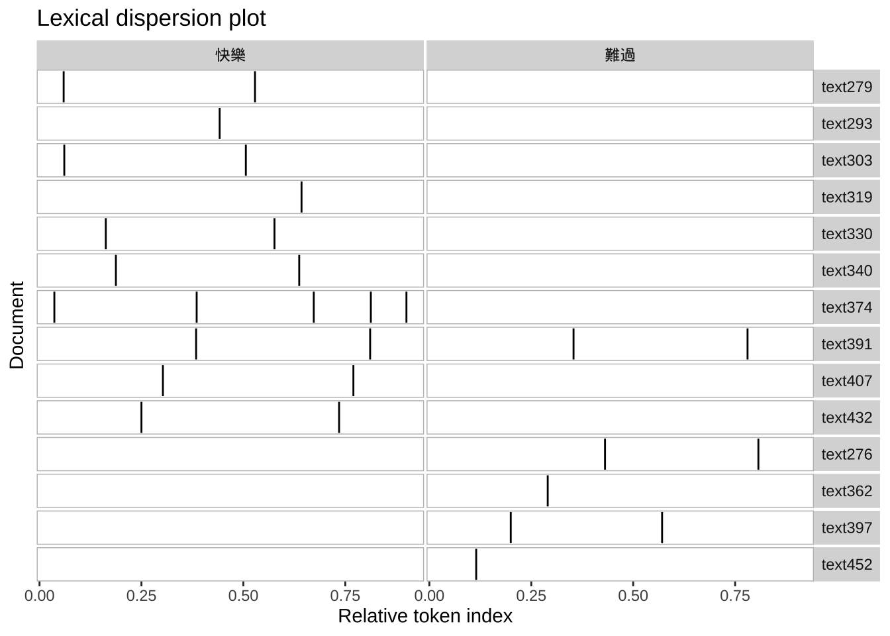

Applications
Environment
## clear up memory
rm(list = ls(all=TRUE))## loading necessary libraries
library(tidyverse)
library(quanteda)
library(quanteda.textplots)
library(quanteda.textstats)
library(readtext)
library(tidytext)
library(jiebaR)
library(wordcloud2)
## Windows-only
## Uncomment to set locale
# Sys.setlocale(category = "LC_ALL", locale = "cht")## OS-specific fixing
## For Windows User
#Sys.setlocale(category = "LC_ALL", locale = "cht")
## Fix Chinese fonts in visualization
## Please replace your system-supported Chinese font
library(showtext)
font_add("Arial Unicode MS", "Arial Unicode.ttf") ## <- replace your font
showtext_auto(enable = TRUE)In this section, we will look at a few more examples of Chinese text processing based on the data set demo_data/song-jay-amei-v1.csv. It is a text collection of songs by Jay Chou and Amei.
Loading Data
We use the CSV version for illustration:
## loading CSV
corp_df_text <- read_csv(file = "demo_data/song-jay-amei-v1.csv",
locale = locale(encoding = "UTF-8"))
## creating doc_id
corp_df_text <- corp_df_text %>%
mutate(doc_id = row_number())
corp_df_textOverview of the Corpus
The data set demo_data/song-jay-amei-v1.csv is a collection of songs by two artists, Jay Chou and Amei Chang.
A quick frequency counts of the songs by artists in the data set:
corp_df_text %>%
ggplot(aes(artist, fill=artist)) +
geom_bar() Data Preprocessing (Cleaning)
Raw texts usually include a lot of noise. For example, texts may include control characters, redundant white-spaces, and duplicate line breaks. These redundant characters may have an impact on the word segmentation performance. It is often suggested to clean up the raw texts before further analysis.
## Define a function
normalize_document <- function(texts) {
texts %>%
str_replace_all("\\p{C}", " ") %>% ## remove control chars
str_replace_all("\\s+", "\n") ## replace whitespaces with linebreak
}
## Example
corp_df_text$lyric[1]
[1] "若非狠下心拿什麼想妳\n想成了風雨 對不起\n保護一顆心看多了烏雲\n兩忘曾經裡 不怨妳\n\n心中有心語 妳我是雙影\n一半無情 另一半深情\n貪一點愛什麼痛也允許\n用懷疑交換 秘密\n寵愛和被忘 在心中交談(說來迷惘)\n妳作證我的冷暖 悲歡(夢短路長)\n妳拉我的手繡一件孤單(絲綢堆了月光)\n說用來取暖 誰敢\n命在誰命裡 愛恨是雙影\n一端美麗 另一端無語\n遠遠走來沒有字的未來\n被時間教會 也許\n情斷留情意 忘記是雙影\n一天冷淡另一天想起\n但願我們永遠走在光裡\n這一生如此 多雲\n這一生從此 無雲\n感謝\n好青年\n提供歌詞"
## Cleaned
normalize_document(corp_df_text$lyric[1])
[1] "若非狠下心拿什麼想妳\n想成了風雨\n對不起\n保護一顆心看多了烏雲\n兩忘曾經裡\n不怨妳\n心中有心語\n妳我是雙影\n一半無情\n另一半深情\n貪一點愛什麼痛也允許\n用懷疑交換\n秘密\n寵愛和被忘\n在心中交談\n(說來迷惘)\n妳作證我的冷暖\n悲歡(夢短路長)\n妳拉我的手繡一件孤單(絲綢堆了月光)\n說用來取暖\n誰敢\n命在誰命裡\n愛恨是雙影\n一端美麗\n另一端無語\n遠遠走來沒有字的未來\n被時間教會\n也許\n情斷留情意\n忘記是雙影\n一天冷淡另一天想起\n但願我們永遠走在光裡\n這一生如此\n多雲\n這一生從此\n無雲\n感謝\n好青年\n提供歌詞"
## Apply cleaning to every document
corp_df_text$lyric <- normalize_document(corp_df_text$lyric) Initialize jiebaR
Because we use jiebaR for word tokenization, we first need to initialize the jiebaR models. Here we create two jiebaR models, one for word tokenization only and the other for parts-of-speech tagging.
## initialize jiebaR models
## for word segmentation only
my_seg <- worker(bylines = TRUE,
symbol = TRUE)
## for POS tagging
my_seg_pos <- worker(
type = "tag",
bylines = FALSE,
symbol = TRUE
)We can specify the path to the external user-defined dictionary in worker(..., user = "").
Alternatively, we can also add add-hoc new words to the jiebaR model. This can be very helpful when we spot any weird segmentation results in the output.
By default, new_user_word() assigns each new word with a default n tag.
#Add customized terms
temp_new_words <-c("雙節棍")
new_user_word(my_seg, temp_new_words)[1] TRUEnew_user_word(my_seg_pos, temp_new_words)[1] TRUETidytext Framework
The following examples demonstrate how to process the Chinese texts under the tidytext framework.
Recall the three important steps:
- Load the corpus data using
readtext()and create a text-based data frame of the corpus; - Initialize a
jiebaRobject usingworker() - Tokenize the text-based data frame into a word-based data frame using
unnest_tokens();

## Word Tokenization
corp_df_word <- corp_df_text %>%
unnest_tokens(
output = word, ## new unit name
input = lyric, ## old unit name
token = function (x) ## tokenization method
segment(x, jiebar = my_seg)
) %>%
group_by(doc_id) %>%
mutate(word_id = row_number()) %>%
ungroup()
corp_df_wordCreating unique indices for your data is very important. In corpus linguistic analysis, we often need to keep track of the original context of the word, phrase or sentence in the concordances. All these unique indices (as well as the source text filenames) would make things a lot easier.
Also, if the metadata of the source documents are available, these unique indices would allow us to connect the tokenized linguistic units to the metadata information (e.g., genres, registers, author profiles) for more interesting analysis.
Therefore, after tokenization, we have obtained a word-based data frame of our corpus data.
Case Study: Word Frequency and Wordcloud
With a word-based data frame, we can easily create a word frequency list as well as a word cloud to have a quick overview of the word distribution of the corpus.
It should be noted that before creating the word frequency list, we often need to consider whether to remove unimportant word tokens. These unimportant tokens usually include:
- stopwords
- symbols and punctuation marks
- digits
- alphabets (e.g., English)
## load chinese stopwords
stopwords_chi <- readLines("demo_data/stopwords-ch-jiebar-zht.txt", encoding = "UTF-8")
## create word freq list
corp_word_freq <- corp_df_word %>%
filter(!word %in% stopwords_chi) %>% # remove stopwords
filter(word %>% str_detect(pattern = "[\u4E00-\u9FFF]+")) %>% # including words consisting only of these chinese chars
count(word) %>%
arrange(desc(n))
## Check top 50 words
head(corp_word_freq, 50)## Create Word Cloud
library(wordcloud2)
corp_word_freq %>%
filter(n > 20) %>% ## select words whose freq > 20
filter(nchar(word) >= 2) %>% ## remove monosyllabic tokens
wordcloud2(shape = "pentagon", size = 0.5)We can represent any character in Unicode in the form of \uXXXX, where the XXXX refers to the coding numbers of the character in Unicode (UTF-8) in hexadecimal format.
In the above regular expression, the Unicode range [\u4E00-\u9FFF] refers to a set of frequently used Chinese characters. Therefore, the way we remove unimportant word tokens is to identify all word tokens consisting of these frequently used Chinese characters that fall within this Unicode range.
For more information related to the Unicode range for the punctuation marks in CJK languages, please see this SO discussion thread.
Case Study: Patterns
In this case study, we are looking at a more complex example. In corpus linguistic analysis, we often need to extract a particular pattern from the texts. In order to retrieve the target patterns at a high accuracy rate, we often need to make use of NLP tools to enrich the raw texts with more annotations. The most often-used information is the parts-of-speech tags of words.
In this example, we will demonstrate how to enrich our corpus data by adding POS tags to our current tidy corpus design.
Our steps are as follows:
- Initialize
jiebarobject, which performs not only word segmentation but also POS tagging; - Create a self-defined function to word-seg and pos-tag each text and combine all tokens,
word/tag, into a long string for each text; - With the text-based data frame
corp_df_text, create a new column, which includes the enriched version of each text, usingmutate()
## Define a function to word-seg and pos-tag a text
tag_text <- function(x, jiebar) {
segment(x, jiebar) %>% ## tokenize + POS-tagging
paste(names(.), sep = "/", collapse = " ") ## reformat output
}A quick example of the function’s usage:
## demo of the function `tag_text()`
tag_text(corp_df_text$lyric[1],
my_seg_pos)[1] "若非/c 狠下/d 心/n 拿/v 什麼/r 想/v 妳/zg \n/x 想成/v 了/ul 風雨/n \n/x 對不起/l \n/x 保護/v 一顆/m 心看/x 多/m 了/ul 烏雲/nr \n/x 兩忘/x 曾經/d 裡/zg \n/x 不怨/v 妳/zg \n/x 心中/s 有/v 心語/n \n/x 妳/zg 我/r 是/v 雙影/n \n/x 一半/m 無情/n \n/x 另一半/d 深情/n \n/x 貪/v 一點/m 愛/zg 什麼/r 痛/a 也/d 允許/v \n/x 用/p 懷疑/v 交換/v \n/x 秘密/n \n/x 寵愛/v 和/c 被/p 忘/v \n/x 在/p 心中/s 交談/v \n/x (/x 說來/v 迷惘/a )/x \n/x 妳/zg 作證/v 我/r 的/uj 冷暖/an \n/x 悲歡/v (/x 夢/n 短路/n 長/zg )/x \n/x 妳/zg 拉/v 我/r 的/uj 手繡/n 一件/m 孤單/a (/x 絲綢/n 堆/v 了/ul 月光/n )/x \n/x 說/zg 用來/v 取暖/v \n/x 誰/zg 敢/v \n/x 命/n 在/p 誰/zg 命裡/x \n/x 愛恨/a 是/v 雙影/n \n/x 一端/m 美麗/ns \n/x 另一端/i 無語/nz \n/x 遠遠/d 走來/v 沒有/v 字/n 的/uj 未來/t \n/x 被/p 時間/n 教會/n \n/x 也許/d \n/x 情斷/x 留情/v 意/n \n/x 忘記/v 是/v 雙影/n \n/x 一天/m 冷淡/a 另/r 一天/m 想起/v \n/x 但願/v 我們/r 永遠/d 走/v 在/p 光裡/x \n/x 這/zg 一生/m 如此/c \n/x 多雲/nr \n/x 這/zg 一生/m 從此/c \n/x 無/v 雲/ns \n/x 感謝/v \n/x 好/a 青年/t \n/x 提供/v 歌詞/n"## Create a new column
## by applying `tag_text()` function to each text
corp_df_text <- corp_df_text %>%
mutate(lyric_tag = map_chr(lyric, tag_text, my_seg_pos))
corp_df_textNow we have obtained an enriched version of all the texts, we can make use of the POS tags for more linguistic analyses.
For example, we can examine the use of adjectives in lyrics.
The data retrieval procedure is now very straightforward: we only need to create a regular expression that matches our interested pattern and go through the enriched version of the texts (i.e., lyric_tag column in corp_df_text) to extract these matches with unnest_tokens().
1.Define a regular expression [^/\\s]+/a\\b for adjectives;
2.Use unnest_tokens() and str_extract_all() to extract target patterns and create a pattern-based data frame.
## define regex patterns
pat <- "[^/\\s]+/a\\b"
## extract patterns from corp
corp_df_pat <- corp_df_text %>%
unnest_tokens(
output = pat, ## name for the new unit to be unnested
input = lyric_tag, ## name for the old unit
token = function(x) ## unnesting method
str_extract_all(x, pattern = pat)
) %>%
select(doc_id, pat, artist, title)
corp_df_patThen we can further explore how different artists use the adjectives differently. We can identify the most frequently used top-20 adjectives for each artist and visualize the results in bar plots:
## Identify top 20 adjectives
corp_df_pat_top20 <- corp_df_pat %>%
mutate(word = str_replace_all(pat, "/.+$","")) %>% ## remove POS tags
group_by(artist) %>% ## split DF by artist
count(word, sort = T) %>% ## create pat freq list for each artist
top_n(20, n) %>% ## select top 20 for each artist
ungroup %>% ## merge DF again
arrange(artist, -n) ## sort result
## Check
corp_df_pat_top20## Data Visualization: Bar plot
corp_df_pat_top20 %>%
mutate(word = reorder_within(word, n, artist)) %>%
ggplot(aes(word, n, fill=artist)) +
geom_bar(stat="identity")+ coord_flip()+
facet_wrap(~artist,scales = "free_y") +
scale_x_reordered() +
labs(x = "Adjectives", y = "Frequency",
title="Top 20 Adjectives of Each Artist's Songs")Case Study: Lexical Bundles
N-grams Extraction
With word boundaries, we can also analyze the recurrent multiword units in the corpus. In this example, let’s take a look at the recurrent four-word sequences (i.e., four-grams) in our corpus.
As the default n-gram tokenization in unnest_tokens(..., token = "ngrams") only works with the English data, we need to define our own ngram tokenization functions.
The Chinese ngram tokenization function should:
- Tokenize each raw text into word tokens;
- Create a set of ngrams from the word tokens of each text
## self defined ngram tokenizer
tokenizer_ngrams <-
function(texts,
jiebar,
n = 2 ,
skip = 0,
delimiter = "_") {
texts %>% ## given a vector of texts
segment(jiebar) %>% ## word tokenization
as.tokens %>% ## list to tokens
tokens_ngrams(n, skip, concatenator = delimiter) %>% ## ngram tokenization
as.list ## tokens to list
}In the above self-defined ngram tokenizer, we make use of tokens_ngrams() in quanteda, which creates a set of ngrams from already tokenized text objects, i.e., tokens. Because this function requires a tokens object as the input, we need to do the class conversion via as.tokens() and as.list().
Take a look at the following examples for a quick overview of tokens_ngrams():
## Examples of quanteda's tokens_grams()
sents <- c("Jack and Jill went up the hill to fetch a pail of water",
"Jack fell down and broke his crown and Jill came tumbling after")
sents_tokens <- tokens(sents) ## English tokenization
tokens_ngrams(sents_tokens, n = 2, skip = 0)Tokens consisting of 2 documents.
text1 :
[1] "Jack_and" "and_Jill" "Jill_went" "went_up" "up_the" "the_hill"
[7] "hill_to" "to_fetch" "fetch_a" "a_pail" "pail_of" "of_water"
text2 :
[1] "Jack_fell" "fell_down" "down_and" "and_broke"
[5] "broke_his" "his_crown" "crown_and" "and_Jill"
[9] "Jill_came" "came_tumbling" "tumbling_after"tokens_ngrams(sents_tokens, n = 2, skip = 1)Tokens consisting of 2 documents.
text1 :
[1] "Jack_Jill" "and_went" "Jill_up" "went_the" "up_hill"
[6] "the_to" "hill_fetch" "to_a" "fetch_pail" "a_of"
[11] "pail_water"
text2 :
[1] "Jack_down" "fell_and" "down_broke" "and_his"
[5] "broke_crown" "his_and" "crown_Jill" "and_came"
[9] "Jill_tumbling" "came_after" A quick example of how to use the self-defined function tokenizer_ngrams():
# examples
texts <- c("這是一個測試的句子",
"這句子",
"超短句",
"最後一個超長的句子測試")
tokenizer_ngrams(
texts = texts,
jiebar = my_seg,
n = 2,
skip = 0,
delimiter = "_"
)$text1
[1] "這是_一個" "一個_測試" "測試_的" "的_句子"
$text2
[1] "這_句子"
$text3
[1] "超短_句"
$text4
[1] "最後_一個" "一個_超長" "超長_的" "的_句子" "句子_測試"tokenizer_ngrams(
texts = texts,
jiebar = my_seg,
n = 2,
skip = 1,
delimiter = "_"
)$text1
[1] "這是_測試" "一個_的" "測試_句子"
$text2
character(0)
$text3
character(0)
$text4
[1] "最後_超長" "一個_的" "超長_句子" "的_測試" tokenizer_ngrams(
texts = texts,
jiebar = my_seg,
n = 5,
skip=0,
delimiter = "_"
)$text1
[1] "這是_一個_測試_的_句子"
$text2
character(0)
$text3
character(0)
$text4
[1] "最後_一個_超長_的_句子" "一個_超長_的_句子_測試"With the above self-defined Chinese ngram tokenizer, we can now perform the ngram tokenization on our corpus. The principle is the same:
We transform the text-based data frame into an ngram-based data frame using
unnest_tokens(...)with the self-defined tokenization functiontokenizer_ngrams();We remove empty and unwanted n-grams entries:
- Empty ngrams due to short texts
- Ngrams spanning punctuation marks, symbols, or paragraph breaks
- Ngrams including alphanumeric characters
## Ngram tokenization
## from text-based to ngram-based DF
corp_df_ngram <- corp_df_text %>%
unnest_tokens(
ngram, ## name for the new unit to be unnested
lyric, ## name for the old unit
token = function(x) ## unnesting method
tokenizer_ngrams(
texts = x,
jiebar = my_seg,
n = 4,
skip = 0,
delimiter = "_"
)
) %>%
select(doc_id, ngram, artist, title, lyricist)
## remove unwanted ngrams
corp_df_ngram_2 <- corp_df_ngram %>%
filter(nzchar(ngram)) %>% ## empty strings
filter(!str_detect(ngram, "[^\u4E00-\u9FFF_]")) ## include ngrams consisting of chinese characters + _
## check
head(corp_df_ngram_2,50)Frequency and Dispersion
Now we can compute two important distributional properties of these 4-grams (Biber, Conrad, and Cortes 2004):
- The token frequency of the 4-gram;
- The number of different texts where the 4-gram is observed (i.e., dispersion)
We set cut-offs for four-grams at: dispersion >= 3 (i.e., four-grams that occur in at least three different songs)
## Compute ngram's frequency and dispersion
corp_ngram_dist <- corp_df_ngram_2 %>%
group_by(ngram) %>%
summarize(freq = n(),
dispersion = n_distinct(doc_id)) %>%
filter(dispersion >= 3) %>%
ungroup
## Check DF arranged by dispersion
corp_ngram_dist %>%
arrange(desc(dispersion)) %>% head(50)We can also look at four-grams with particular lexical words:
## Check ngrams with a specific word
corp_ngram_dist %>%
filter(str_detect(ngram, "我")) %>%
arrange(desc(dispersion))corp_ngram_dist %>%
filter(str_detect(ngram, "你")) %>%
arrange(desc(dispersion))corp_ngram_dist %>%
filter(str_detect(ngram, "媽媽")) %>%
arrange(desc(dispersion))Quanteda Framework
All the above examples demonstrate the Chinese data processing with the tidytext framework. Here, we look at a few more examples of processing the data with the quanteda framework.
For Chinese data, the most important base unit in Quanteda is the tokens object. So first we need to create the tokens object based on the jiebaR tokenization method.
## create tokens based on self-defined segmentation
corp_tokens <- as.tokens(segment(corp_df_text$lyric, my_seg))
## add document-level metadata
docvars(corp_tokens) <- corp_df_text[, c("artist","lyricist","composer","title","gender")]
## check 1st doc
corp_tokens[[1]] [1] "若非" "狠下" "心" "拿" "什麼" "想" "妳" "\n"
[9] "想成" "了" "風雨" "\n" "對不起" "\n" "保護" "一顆"
[17] "心看" "多" "了" "烏雲" "\n" "兩忘" "曾經" "裡"
[25] "\n" "不怨" "妳" "\n" "心中" "有" "心語" "\n"
[33] "妳" "我" "是" "雙影" "\n" "一半" "無情" "\n"
[41] "另一半" "深情" "\n" "貪" "一點" "愛" "什麼" "痛"
[49] "也" "允許" "\n" "用" "懷疑" "交換" "\n" "秘密"
[57] "\n" "寵愛" "和" "被" "忘" "\n" "在" "心中"
[65] "交談" "\n" "(" "說來" "迷惘" ")" "\n" "妳"
[73] "作證" "我" "的" "冷暖" "\n" "悲歡" "(" "夢"
[81] "短路" "長" ")" "\n" "妳" "拉" "我" "的"
[89] "手繡" "一件" "孤單" "(" "絲綢" "堆" "了" "月光"
[97] ")" "\n" "說" "用來" "取暖" "\n" "誰" "敢"
[105] "\n" "命" "在" "誰" "命裡" "\n" "愛恨" "是"
[113] "雙影" "\n" "一端" "美麗" "\n" "另一端" "無語" "\n"
[121] "遠遠" "走來" "沒有" "字" "的" "未來" "\n" "被"
[129] "時間" "教會" "\n" "也許" "\n" "情斷" "留情" "意"
[137] "\n" "忘記" "是" "雙影" "\n" "一天" "冷淡" "另"
[145] "一天" "想起" "\n" "但願" "我們" "永遠" "走" "在"
[153] "光裡" "\n" "這" "一生" "如此" "\n" "多雲" "\n"
[161] "這" "一生" "從此" "\n" "無" "雲" "\n" "感謝"
[169] "\n" "好" "青年" "\n" "提供" "歌詞" Case Study: Concordances with kwic()
This is an example of processing the Chinese data under Quanteda framework.
Without relying on the Quanteda-native tokenization, we have created the tokens object directly based on the output of segment().
With this tokens object, we can perform the concordance analysis with kwic() and create a dispersion plot of the keyword.
## keyword-in-context
kwic(corp_tokens, "快樂", window = 10)## Create dispersion plot based on kwic
textplot_xray(
kwic(corp_tokens, "雙截棍"))
Because we have also added the document-level information, we can utilize these document-level variables and perform more interesting analysis.
For example, we can examine the concordance lines of a keyword in a subset of the corpus. In the following code chunk, we examine the concordance lines of 快樂 and 難過 in songs written by 方文山.
## Subsetting tokens
corp_tokens_subset <-tokens_subset(corp_tokens, ## tokens
str_detect(lyricist, "方文山")) ## subsetting rule
## Creating dispersion plot based on kwic
textplot_xray(
kwic(corp_tokens_subset, "快樂"),
kwic(corp_tokens_subset, "難過"))
Case Study: Comparison Word Cloud
In quanteda, we can quickly create a comparison word cloud, showing the the differences of the lexical distributions in different corpus subsets. For example, we can create a comparison word cloud to show the lexical differences of Jay’s and Amei’s songs.
## Create comparison word clouds
corp_tokens %>%
dfm() %>% ## from tokens to dfm objects
dfm_remove(pattern= stopwords_chi, ## remove stopwords
valuetype="fixed") %>%
dfm_keep(pattern = "[\u4E00-\u9FFF]+", ## include words consisting of freq Chinese chars
valuetype= "regex") %>%
dfm_group (groups = artist) %>% ## group by artist
dfm_trim(min_termfreq = 10, ## distributional cutoffs
min_docfreq = 2,
verbose = F) %>%
textplot_wordcloud(comparison=TRUE,
min_size = 0.8,
max_size = 4,
color = c("navyblue","gold"))Case Study: Collocations
## extract collocations
corp_collocations <- corp_tokens %>%
tokens_keep(pattern = "[\u4E00-\u9FFF]+", ## include words consisting of freq Chinese chars
valuetype= "regex") %>%
textstat_collocations(
size = 2,
min_count = 10)
## Check top 20 collocations in the corpus
top_n(corp_collocations, 20, z)Conclusion
Tokenization is an important step in Chinese text processing. We may need to take into account many factors when determining the right tokenization method, including:
- What is the base unit we would like to work with? Texts? Paragraphs? Chunks? Sentences? N-grams? Words?
- Do we need an enriched version of the raw texts, e.g., the parts-of-speech tags of words in the later analysis?
- Do we need to include non-word tokens such as symbols, punctuation marks, digits, or alphabets in the analysis?
- Do we need to remove semantically irrelevant words, i.e., stopwords?
- Do we have many domain-specific words in our corpus (e.g., terminology, proper names)?
The answers to the above questions would give us more clues on how to determine the most effective tokenization methods for the data.
Thank you!
Questions?